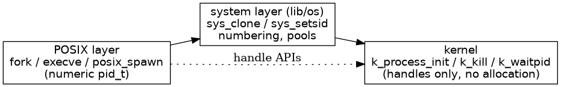

Multi-Process Design
This chapter documents the kernel and system-layer substrate that backs the
fork(), execve(), and posix_spawn families in the
POSIX_MULTI_PROCESS and POSIX_SPAWN Option Groups.
Process model
A process is a thread group: its identity is its thread-group leader, so a
process handle (k_pid_t) is a thread handle. struct k_process is the
kernel-owned record of one thread group and hangs off the leader; it is not a
handle and, except when a caller-provided record crosses the user/kernel
boundary, not a kernel object. Foreign handles are resolved by identity-value
scans under a lock and never dereferenced, so a handle stays meaningful from
creation to reap - including after the leader thread has exited.
Numeric process, group, and session IDs are a system-layer concept, not a
kernel one: the kernel speaks only in handles, and lib/os maintains the
numbering tables behind sys_process_id() and friends. All allocation is
likewise confined to lib/os: the kernel never allocates and never calls an
allocator, only initializing caller-provided or statically defined records.

Creation: sys_clone
sys_clone() is the creation primitive; fork(), posix_spawn,
pthread_create(), and sys_thread_create() are library constructs
over it. With no flags it produces a fresh process from a
pooled record and a pool-drawn leader thread. SYS_CLONE_THREAD selects
the thread tier: the new thread joins the caller’s thread group instead -
and without CONFIG_PROCESS it is simply a new thread, so
thread creation behaves identically in process-less builds.
SYS_CLONE_PAUSED leaves the created thread stopped so a caller can apply
attributes (process group, signal mask, scheduling) before starting it.
SYS_CLONE_VM_COPY selects the fork model. Beneath the system layer,
k_clone() is the kernel primitive with the same two tiers over entirely
caller-provided memory - record, thread, and stack - allocating nothing.
![digraph clone {
node [shape=box, fontname="Helvetica"];
args [label="sys_clone(args)"];
vm [label="SYS_CLONE_VM_COPY?"; shape=diamond];
fork [label="z_sys_clone_vm_copy\n(duplicate address space,\nkernel-assisted resume)"];
thr [label="SYS_CLONE_THREAD?"; shape=diamond];
member[label="thread in the\ncalling process"];
fresh[label="fresh leader\n(pool thread + entry)"];
init [label="k_process_init\n(adopt leader, register)"];
start[label="SYS_CLONE_PAUSED?\nstart or hand back stopped"; shape=diamond];
args -> vm;
vm -> fork [label="yes"];
vm -> thr [label="no"];
thr -> member [label="yes"];
thr -> fresh [label="no"];
member -> start;
fresh -> init -> start;
fork -> init;
}](../../_images/graphviz-9821d11f80bb86b01d741c650eb8433b52b19925.png)
The fork model and its substrate
The fork model duplicates the caller’s writable memory into the child at
identical virtual addresses and resumes the child at the call site. Copied
memory at identical addresses is what makes the model sound where vfork
was not: the child cannot disturb the parent’s stack, and a plain
setjmp/longjmp resumes the child because every address it restores is
valid in its own copy - no architecture context-copy code is required.
The substrate is experimental (CONFIG_PROCESS_VM, x86 only).
process_vm_clone() builds the child’s memory domain by mirroring the
parent’s partitions, then repoints the writable ranges and the stack at fresh
frames through the architecture hook z_mem_domain_clone_remap() (no TLB
shootdown, since the child is not yet live on any CPU).
The child’s resume is kernel-assisted (ARCH_HAS_FORK_RESUME; x86_64,
ia32, and arm64):
the syscall entry captures the caller’s complete register state - the
callee-saved registers are saved alongside the frame precisely because the C
convention would otherwise leave a forked child with no history to restore
them from - and the child’s first run enters the common syscall exit path
from a staged copy of that frame with the return-value register zeroed. The
child’s TLS is the parent’s address: the clone already copied that region,
so captured TLS-variable addresses and register-relative accesses agree,
as fork demands. This is possible because CONFIG_PROCESS_VM excludes
CONFIG_CURRENT_THREAD_USE_TLS, leaving kernel mode with
no reason to dereference user TLS. fork() is therefore a user-mode
operation: a kernel-mode caller has no syscall frame to resume and receives
ENOSYS.
Note
Confirmed working (x86_64, ia32, and arm64): fork() returns twice through the kernel resume, the child diverges on its own stack and data copies, and the parent - whose view is asserted unchanged - reaps it. On arm64 no dedicated resume path was needed at all: every arm64 thread is born through the exception return path popping a synthetic ESF, so the forked child’s birth context simply is the parent’s captured syscall frame with the return-value register zeroed.
Per-process permissions
With CONFIG_PROCESS and userspace, the process - not the
thread - is the kernel-object permission principal: threads sharing an address
space can already reach each other’s memory, so per-thread object permissions
within a process add no isolation. Each object’s permission bitmap is sized by
CONFIG_MAX_PROCESS_BYTES rather than
CONFIG_MAX_THREAD_BYTES, the principal index lives once in
struct k_process, and one sweep at reap replaces the per-thread-death walk.
Granting to any member thread grants the whole process, and a forking child
inherits the parent’s grants.
Signals
Signals are delivered either to a specific thread (pthread_kill()) or to
a process (kill()). A process-directed signal is delivered to one member
thread that has it unblocked, preferring the caller for a self-signal. When
every member has the signal masked it pends at process scope and is claimed
by whichever member first unblocks or waits for it - strict POSIX semantics for
fully-masked processes. Kernel-resolved process delivery bypasses the
per-thread-object permission check, since kill() authorization is
process-level.
Exec
An exec path resolves in two tiers. First, prelinked images: a lookup
through posix_spawn_image_lookup() (a weak function applications and test
suites override). Second, with CONFIG_POSIX_EXEC_LLEXT,
real executable loading: the path is loaded from the filesystem as a linkable
loadable extension (llext), and its exported main() runs as the new
process image - the image ABI is int main(int argc, char **argv, char
**envp), and the return value becomes the process’s exit status.
Either way execve() replaces the image in place: it aborts every
other member thread with k_process_prune() and continues on the calling
thread, preserving the process’s identity, parent, and group membership;
handled signal dispositions revert to default and FD_CLOEXEC descriptors
are closed. An extension image cannot unload itself - its caller executes
from the extension - so a table sized by
CONFIG_POSIX_EXEC_LLEXT_MAX records which extension backs
which exec’d process: a main() that returns unloads in place, an image
terminated by _exit() or a signal is unloaded by the wait() family
when the process is reaped, and a chain-exec’ing image is unloaded by its
successor past exec’s point of no return. The new image then runs on the
calling thread, restarted in place. The argument
and environment vectors are staged at the top of the thread’s own stack
(sys_thread_stack_stage(), bounded by
CONFIG_POSIX_EXEC_ARG_BYTES else E2BIG - the
setup_arg_pages() analog), and sys_thread_restart() resets the
stack pointer just below them and enters the image
(arch_stack_jump(), the start_thread() analog) - same thread,
same stack, pid, signal mask, and priority all trivially preserved.
Memory protection composes per class: MMU platforms map kernel RAM
executable and PMP does not constrain machine-mode execution, so both
run images as-is; XIP MPU platforms map RAM execute-never, so under
CONFIG_USERSPACE the image’s llext partitions enter a per-image
memory domain that the exec’ing thread joins before the jump.
Remaining deviations: architectures without stack-jump support
(native_sim, whose threads run on host stacks) run the image on the
calling thread’s live frames instead, and a child that is never
collected by wait() holds its extension-table slot until the slot
is swept on a later exec.
Known deviations
The following deviations from strict POSIX are documented for
POSIX_MULTI_PROCESS and POSIX_SPAWN in the current implementation.
Each is expected to be retired as the corresponding substrate lands.
Interface |
Deviation |
|---|---|
Requires |
|
|
A path names a prelinked image or, with
|
|
File actions apply to the paused child’s own descriptor table before it starts; the caller’s descriptors are untouched, as POSIX requires. |
Process-directed pending signals |
Held at process scope and claimed by the first member to unblock or wait; conforms to POSIX. |